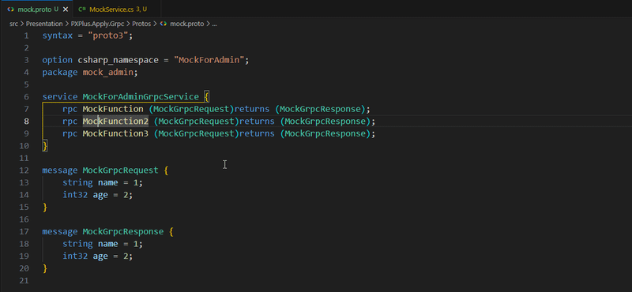

Navigate from .proto to implementation
Jump from Protocol Buffer definitions straight to your C# and Python service code. Press F12 and go.
Works with VS Code 1.85+ · Free and open source
Features
Smart Navigation
- F12 Go to Definition
- Cmd/Ctrl+F12 Go to Implementation
- Alt/Option+F12 Peek Definition
Intelligent Search
- Auto-discovers
*Service.csand*Service.py - Configurable search paths
- Per-file
service_filedirective override
Developer Friendly
- Zero configuration for standard projects
- Smart caching for fast navigation
- Detailed logging in Output panel
See it in action

Quick Start
2
Open a .proto file
The extension activates automatically on any .proto file. Zero config needed for standard project layouts.
3
Navigate
Press F12 on a service method to jump to C# or Python implementation. Customize paths via Command Palette.
Keyboard Shortcuts
| Shortcut | Action |
|---|---|
| F12 | Go to Definition |
| Cmd/Ctrl+F12 | Go to Implementation |
| Alt/Option+F12 | Peek Definition |
Release History
Added
- Added
homepagefield inpackage.jsonpointing to the extension's landing page